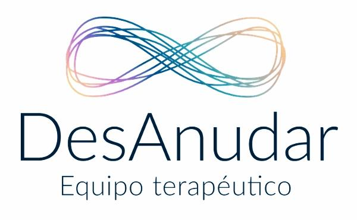

Lic. Noelia Vega · Campana
El nudo se puede desatar.
Atención psicológica presencial en Campana y online, estés donde estés.
Los botones de contacto se activan cuando arrancamos con la versión oficial.

Datos rápidos
- PresencialOsvaldo Demarco 129, Campana
- OnlineAsistencia psicológica a distancia
- Lunes a sábadoSábados de 10 a 13 h
Atención virtual y presencial
Elegí cómo te queda más cómodo.
En Campana
Las sesiones presenciales son en Osvaldo Demarco 129, Campana.
De lunes a viernes por la mañana y por la tarde, y los sábados a la mañana.
Asistencia psicológica online
La misma atención, a distancia, desde tu casa o desde cualquier lugar.
Sirve si vivís lejos de Campana o si tus horarios no te dejan viajar al consultorio.
Cómo empezar
Tres pasos para la primera entrevista.
Escribinos
Un mensaje corto alcanza: contá qué te trae y si preferís presencial u online.
Coordinamos día y hora
Te proponemos un horario dentro de la atención del equipo.
Primera entrevista
En el consultorio de Campana u online, como elijas.
Horarios y dirección
De lunes a sábado.
| Lunes | 9:00 a 19:00 |
|---|---|
| Martes | 9:00 a 18:00 |
| Miércoles | 9:00 a 18:00 |
| Jueves | 9:00 a 18:00 |
| Viernes | 9:00 a 18:00 |
| Sábado | 10:00 a 13:00 |
| Domingo | Cerrado |
Campana, Provincia de Buenos Aires Teléfono: 011 6371-5212
Escribinos y coordinamos tu primera entrevista.
Presencial en Campana u online.
Los botones de contacto se activan cuando arrancamos con la versión oficial.